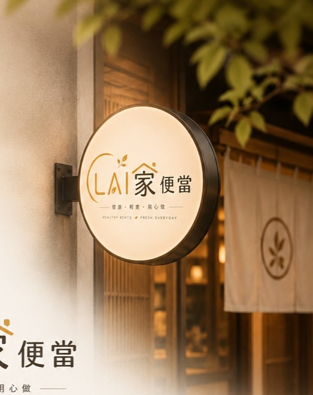

健康輕食
舒肥雞胸、香煎鮭魚、嫩肩牛與五穀飯，清楚標示克數、熱量與蛋白質。
看健康餐
舒肥雞胸、香煎鮭魚、嫩肩牛與五穀飯，清楚標示克數、熱量與蛋白質。
看健康餐控肉、口水雞、滷排骨、鹽烤鯖魚，適合日常午餐與公司團訂。
看經典餐公司午餐、會議餐盒與固定配餐需求，都可以先用團訂入口規劃。
了解團訂前台負責轉換，後台負責接單、查單、營業統計、出單列印與 POS 串接，後續可給加盟店使用。
新單提醒、接單確認、出餐狀態。
用訂單號、手機、姓名快速搜尋。
每日營業額、品項排行、加盟店數據。
接單後同步廚房單、客戶明細與 POS。